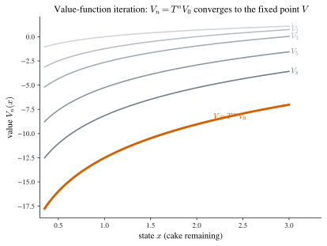
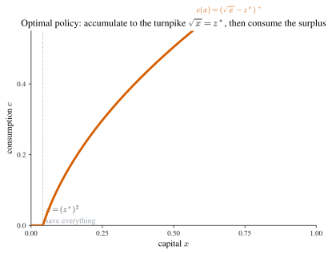
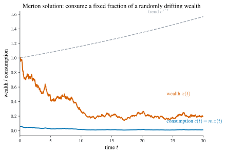

5 Dynamic Programming
Dynamic programming is the third method of the book, after the calculus of variations and optimal control. Where those methods perturb a whole path at once, dynamic programming — created by Richard Bellman in the 1950s (Bellman 1957) — breaks the problem into a nested family of identical sub-problems and links neighbours by a recursion. The link is the principle of optimality: an optimal path, continued from any point it reaches, is itself optimal for the sub-problem starting there. Turned into an equation this is the Bellman equation (discrete time) or the Hamilton–Jacobi–Bellman (HJB) equation (continuous time), and the entire method consists in solving it.
The pay-off is reach. Dynamic programming applies more widely than variational methods: it handles discrete and continuous time, deterministic and stochastic dynamics, and it turns naturally into an algorithm for the computer. The cost is a new object — the value function \(V\), the optimized objective seen as a function of the current state — and a new way of thinking, recursive rather than path-wise.
Three threads organize the chapter:
- a discrete-time theory (Chapter 6), where the Bellman equation is an algebraic recursion; in finite horizon it is solved by backward (or forward) recursion, and in infinite horizon by the Bellman operator \(T\), whose unique fixed point — secured by the contraction-mapping theorem — is \(V\);
- a continuous-time theory (Chapter 7), where the HJB equation is a partial differential equation derived by shrinking a one-period Bellman equation, and which connects back to the maximum principle through \(V_x=\lambda\);
- a stochastic theory (Chapter 8), where conditional expectations enter the Bellman equation and, in continuous time, Itô’s lemma adds a second-derivative term — the route to the Merton portfolio problem.
The discount trap (read first). The course writes the discrete-time per-period discount as \(\rho\). Throughout these notes that quantity is the discount factor \(\beta=\tfrac1{1+\rho}\in(0,1)\), reserving \(\rho\) for the continuous-time discount rate in \(e^{-\rho t}\). So every discrete-time Bellman equation below carries \(\beta\in(0,1)\), and every continuous-time HJB equation carries \(\rho>0\); they relate by \(\beta=e^{-\rho}\) per unit time.
6 Discrete time
6.1 The dynamic-programming problem
We watch a system at times \(t=0,1,\dots,T\), where the horizon \(T\) is a positive integer or \(+\infty\). Its condition at time \(t\) is summarized by a state \(x_t\) lying in the state space \(\mathbb{S}\), a subset of a Euclidean space (typically \(\mathbb{S}=\mathbb{R}^n\) or \(\mathbb{R}^n_+\)). At each \(t\) the decision-maker chooses an action \(u_t\) from the action space \(\mathbb{A}\subseteq\mathbb{R}^m\), collecting a per-period payoff \(\pi_t(x_t,u_t)\) and moving the state to next period according to the transition (law of motion)
\[ x_{t+1}=f_t(x_t,u_t). \tag{6.1}\]
The actions available in state \(x\) are constrained to a set \(\Gamma_t(x)\subseteq\mathbb{A}\); formally \(\Gamma_t:\mathbb{S}\rightrightarrows\mathbb{A}\) is the feasible-action correspondence, a map from \(\mathbb{S}\) into the power set of \(\mathbb{A}\). A standard one-dimensional example is \(\Gamma(x)=[a(x),b(x)]\) with \(a\le b\). The functions \(\pi_t,f_t\) are real-valued and given.
The decision-maker maximizes the discounted sum of payoffs. Writing \(\beta\in(0,1)\) for the discount factor, the dynamic-programming problem (P) is
\[ \sup\ \sum_{t=0}^{T}\beta^{t}\,\pi_t(x_t,u_t) \qquad\text{s.t.}\quad x_{t+1}=f_t(x_t,u_t),\quad u_t\in\Gamma_t(x_t)\ \ \forall t,\quad x_0=x\in\mathbb{S}. \tag{6.2}\]
Definition 6.1 (Feasible path) A sequence \(\{x_t,u_t\}\) is a feasible path if \(x_t\in\mathbb{S}\), \(u_t\in\Gamma_t(x_t)\), and \(x_{t+1}=f_t(x_t,u_t)\) for all \(t\). When \(T=\infty\) we require in addition that the series \(\sum_{t=0}^{\infty}\beta^{t}\pi_t(x_t,u_t)\) exist (its positive or negative part is finite). A state path \((x_t)\) is feasible if some control sequence makes \((x_t,u_t)\) feasible; it starts at \(a\) if \(x_0=a\).
Existence of the objective. A clean sufficient condition for the infinite-horizon series to exist is a growth bound: if there are \(a>0\) and \(\theta\in(0,\beta^{-1})\) with \(\pi_t(x_t,u_t)\le a\theta^t\) along every feasible path, then \(\sum_t\beta^t\pi_t^{+}\le a\sum_t(\beta\theta)^t<\infty\), so the positive part is finite and the sum is well defined. We adopt as a standing assumption in the infinite-horizon case that \(\sum_t\beta^t\pi_t(x_t,u_t)\) exists along every feasible path.
The value of the problem started at \(x\) is the value function
\[ V(x)=\sup\Bigl\{\textstyle\sum_{t=0}^{T}\beta^{t}\pi_t(x_t,u_t)\ :\ \{x_t,u_t\}\text{ feasible},\ x_0=x\Bigr\}. \tag{6.3}\]
Policies: open- vs closed-loop, Markovian, stationary
Optimization over paths is recast as optimization over policies (strategies) — rules that prescribe an action at every contingency.
Definition 6.2 (Policy and induced path) A policy \(\sigma=(\sigma_0,\sigma_1,\dots,\sigma_T)\) assigns to each history a feasible action, \(u_t=\sigma_t(x_0,u_0;x_1,u_1;\dots;x_{t-1},u_{t-1};x_t)\in\Gamma_t(x_t)\). Given \(\sigma\) and an initial state \(x\), the recursion Equation 6.1 generates a unique induced path, whose objective value is the value of the policy \(V_\sigma(x)\). A policy \(\sigma^\ast\) is optimal if \(V_{\sigma^\ast}(x)=\max_\sigma V_\sigma(x)\) for every \(x\in\mathbb{S}\).
The requirement that one policy be best at every initial state is strong; Example 6.5 below shows an optimal policy can fail to exist. The following classification of policies is central.
Definition 6.3 (Open-loop, closed-loop, Markovian, stationary) A policy is open-loop if every \(\sigma_t\) depends only on the initial state \(x_0\) (equivalently, the whole action sequence is fixed at \(t=0\)); otherwise it is closed-loop (a feedback policy that reacts to observed history). A policy is Markovian if every \(\sigma_t\) depends only on the current state, \(u_t=\sigma_t(x_t)\); it is stationary Markovian if in addition \(\sigma_0=\sigma_1=\dots=\sigma_T\), in which case we write the single function \(\phi\).
Open and closed loops coincide on outcomes. Every closed-loop policy \(\sigma\) is strongly equivalent to a unique open-loop policy: substituting the realized actions back into \(\sigma\) recursively expresses each \(u_t\) as a function of \(x_0\) alone, \[ u_0=\sigma_0(x_0)=:\varphi_0(x_0),\quad u_1=\sigma_1\bigl(x_0,\varphi_0(x_0);f_0(x_0,\varphi_0(x_0))\bigr)=:\varphi_1(x_0),\ \dots \] So a single open-loop policy reproduces the path of \(\sigma\) from a given \(x_0\). The information distinction matters only off the realized path: if history is unobservable one can only commit to an open-loop rule at \(t=0\); if it is observable one may use feedback. Markovian policies are the feedback rules that ignore everything but the current state — exactly the right class when, as here, payoffs and dynamics are history-independent.
Example 6.1 (Many policies, one open-loop outcome) For the two-period system \(x_1=x_0-u_0\), \(0\le u_0\le x_0\), \(0\le u_1\le x_1\), every policy of the form \(u_0=x_0/2\), \(u_1=\alpha\frac{x_0}{2}+\beta_0 u_0+\gamma x_1\) with \(\alpha+\beta_0+\gamma=1\) induces the same open-loop path \(u_0=u_1=x_0/2\), because along that path \(u_0=x_1=x_0/2\). Among them the unique Markovian policy is \(u_0=x_0/2,\ u_1=x_1\).
A first sanity check links \(V\) to the value of an optimal policy.
Theorem 6.1 (Value of an optimal policy) If problem Equation 6.2 admits an optimal policy \(\sigma^\ast\), then \(V=V_{\sigma^\ast}\).
Proof. Let \(\sigma\) be the open-loop policy induced by \(\sigma^\ast\); then \(V_{\sigma^\ast}(x)=V_\sigma(x)\) for all \(x\). By the definition Equation 6.3 of \(V\) as a supremum over feasible paths, \(V(x)\ge V_\sigma(x)\); and optimality of \(\sigma^\ast\) gives \(V_{\sigma^\ast}(x)\ge V_{\sigma'}(x)\) for every policy \(\sigma'\), in particular for the ones tracing any feasible path, so \(V(x)\le V_{\sigma^\ast}(x)\). Hence \(V=V_{\sigma^\ast}\). \(\;\blacksquare\)
6.2 The principle of optimality and the Bellman equation
The engine of the method is to split (P) into nested tail problems. Problem \((\mathrm P_t)\) starts the clock at \(t\) in state \(x\):
\[ \sup\ \sum_{s=t}^{T}\beta^{\,s-t}\pi_s(x_s,u_s) \qquad\text{s.t.}\quad x_{s+1}=f_s(x_s,u_s),\ u_s\in\Gamma_s(x_s)\ \ \forall s\ge t,\quad x_t=x, \tag{6.4}\]
with value function \(V_t(x)\). The original problem (P) is \((\mathrm P_0)\) and \(V=V_0\). The tail problems are self-similar — each is a dynamic-programming problem in its own right — and the principle of optimality says their values obey a one-step recursion.
Theorem 6.2 (Bellman equation (principle of optimality)) For problem Equation 6.2 the value functions of the tail problems satisfy \[ V_t(x)=\sup_{u\in\Gamma_t(x)}\Bigl\{\pi_t(x,u)+\beta\,V_{t+1}\bigl(f_t(x,u)\bigr)\Bigr\}, \qquad\forall t,\ \forall x\in\mathbb{S}, \tag{6.5}\] with the terminal convention \(V_{T+1}\equiv 0\) when \(T<\infty\).
Proof. Fix \(t\) and \(x=x_t\). Any feasible continuation chooses an action \(u\in\Gamma_t(x)\) now, earns \(\pi_t(x,u)\), lands at \(x_{t+1}=f_t(x,u)\), and then follows some feasible tail from \(t+1\). The objective of \((\mathrm P_t)\) splits additively, \[ \sum_{s=t}^{T}\beta^{\,s-t}\pi_s(x_s,u_s) =\pi_t(x,u)+\beta\sum_{s=t+1}^{T}\beta^{\,s-(t+1)}\pi_s(x_s,u_s). \] Take the supremum on the right. Because the constraints for \(s\ge t+1\) involve only the continuation and the inner sum is exactly the objective of \((\mathrm P_{t+1})\) started at \(f_t(x,u)\), the supremum of the inner sum over feasible tails is \(V_{t+1}(f_t(x,u))\) — this is the principle of optimality: the tail of an optimal plan is optimal for the tail problem, so optimizing the whole is the same as optimizing the first action and then optimizing the remainder. Therefore \[ V_t(x)=\sup_{u\in\Gamma_t(x)}\Bigl\{\pi_t(x,u)+\beta\,V_{t+1}\bigl(f_t(x,u)\bigr)\Bigr\}. \] The two inequalities behind “the supremum of the sum equals the sum after optimizing the tail” are routine: \(\ge\) holds because any feasible action-then-tail is a feasible continuation; \(\le\) holds because the tail value can be approached within \(\varepsilon\) for each fixed first action. \(\;\blacksquare\)
The Bellman equation is a set of necessary conditions the value functions must satisfy. Its clean one-step form is not automatic; it relies on the structure of (P): the objective is additively separable, and \(\pi_t,f_t,\Gamma_t\) depend on history only through the current \((x_t,t)\). This same structure is why we expect an optimal policy, when one exists, to be Markovian — the dynamics forget the past. (When \(T=\infty\) the convention \(V_{T+1}\equiv0\) is dropped; Corollary 6.1 restates Equation 6.5 for that case.)
6.3 Finite horizon
With \(T<\infty\) the tail problems are finitely many and the recursion Equation 6.5 can be solved explicitly. We first record when a Markovian policy is optimal, then the finite-horizon verification theorem, then the two recursions.
Theorem 6.3 (Optimality of a Markovian policy) A feasible Markovian policy \((\sigma_0,\dots,\sigma_T)\) is optimal iff for all \(t\) and all \(x\), \[ V_t(x)=\max_{u\in\Gamma_t(x)}\bigl\{\pi_t(x,u)+\beta V_{t+1}(f_t(x,u))\bigr\} =\pi_t(x,\sigma_t(x))+\beta V_{t+1}\bigl(f_t(x,\sigma_t(x))\bigr), \] with \(V_{T+1}\equiv0\). Equivalently, \(\sigma_t(x)\) attains the maximand of the Bellman equation Equation 6.5 at every \((t,x)\).
A Markovian optimal policy is unique precisely when the static maximization \(\max_{u\in\Gamma_t(x)}\{\pi_t(x,u)+\beta V_{t+1}(f_t(x,u))\}\) has a unique solution at every \((t,x)\) (corollary of Theorem 6.3). The converse question — given functions solving the Bellman equation, are they the value functions? — is answered by a verification theorem.
Theorem 6.4 (Finite-horizon verification theorem) Suppose real-valued functions \((W_0,\dots,W_T)\) on \(\mathbb{S}\) and a Markovian policy \((\sigma_0,\dots,\sigma_T)\) satisfy, for all \(t\) and \(x\), \[ W_t(x)=\max_{u\in\Gamma_t(x)}\bigl\{\pi_t(x,u)+\beta W_{t+1}(f_t(x,u))\bigr\} =\pi_t(x,\sigma_t(x))+\beta W_{t+1}\bigl(f_t(x,\sigma_t(x))\bigr), \] with \(W_{T+1}\equiv0\). Then \((\sigma_0,\dots,\sigma_T)\) is an optimal Markovian policy for (P) and \(V_t=W_t\) for all \(t\).
Proof. This is exactly the backward induction below: unfolding the displayed identity from \(T\) down to \(0\) shows \(W_t\) equals the optimized objective of \((\mathrm P_t)\) and \(\sigma_t\) attains it. The key point is that the system pins the functions uniquely — start from \(W_{T+1}\equiv0\) and the recursion determines \(W_T\), then \(W_{T-1}\), and so on — so the verifying functions can only be the value functions \(V_t\). \(\;\blacksquare\)
Existence of an optimal Markovian policy follows from continuity and compactness, via Berge’s maximum theorem.
Theorem 6.5 (Existence (Berge)) If for every \(t\) the payoff \(\pi_t\) is continuous, the transition \(f_t\) is continuous, and the correspondence \(\Gamma_t\) is continuous and compact-valued, then (P) has an optimal Markovian policy \((\sigma_0,\dots,\sigma_T)\), each \(V_t\) is continuous, and the supremum in Equation 6.5 is attained.
Proof. The workhorse is the maximum theorem: if \(g(x,y)\) is continuous on \(\mathbb{A}\times\mathbb{B}\) and \(\Gamma\) is continuous and compact-valued, then \(F(x)=\sup_{y\in\Gamma(x)}g(x,y)=\max_{y\in\Gamma(x)}g(x,y)\) is continuous and the argmax correspondence is upper hemicontinuous (hence admits a measurable selection, continuous on a dense set). Apply it by backward induction. At \(t=T\), \(V_T(x)=\max_{u\in\Gamma_T(x)}\pi_T(x,u)\) is continuous and attained, giving \(\sigma_T\). If \(V_{t+1}\) is continuous, then \(g(x,u)=\pi_t(x,u)+\beta V_{t+1}(f_t(x,u))\) is continuous (composition of continuous maps), so the maximum theorem makes \(V_t\) continuous, the max attained, and yields a selection \(\sigma_t\). Descending to \(t=0\) produces the policy and the continuity of every \(V_t\). \(\;\blacksquare\)
Backward recursion
The Bellman equation, read from the terminal date downward, gives the backward recursion. Solve the smallest tail first: \[ \max_{u\in\Gamma_T(x)}\pi_T(x,u)\ \Rightarrow\ (\sigma_T,V_T);\qquad \max_{u\in\Gamma_{T-1}(x)}\bigl\{\pi_{T-1}(x,u)+\beta V_T(f_{T-1}(x,u))\bigr\}\ \Rightarrow\ (\sigma_{T-1},V_{T-1}); \] and so on down to \(\max_{u\in\Gamma_0(x)}\{\pi_0(x,u)+\beta V_1(f_0(x,u))\}\Rightarrow(\sigma_0,V_0)\). The output is the optimal Markovian policy \((\sigma_0,\dots,\sigma_T)\) and all the value functions.
Example 6.2 (Cake-eating, finite horizon (log utility), two ways) Maximize \(\sum_{t=0}^{T}\beta^t\ln c_t\) subject to \(x_{t+1}=x_t-c_t\), \(0\le c_t\le x_t\), \(x_0>0\).
Static route. The problem reduces to \(\max\sum_t\beta^t\ln c_t\) s.t. \(\sum_t c_t=x_0\). Linear-independence CQ holds, the objective is strictly concave, the constraint linear; so the Lagrangian \(\mathcal{L}=\sum_t\beta^t\ln c_t+\lambda(x_0-\sum_t c_t)\) gives \(\beta^t/c_t=\lambda\), i.e. \(c_t=\beta^t/\lambda\), and \(\sum_t c_t=x_0\) fixes \[ c_t=\frac{\beta^t}{\sum_{s=0}^{T}\beta^s}\,x_0,\qquad x_t=\frac{\sum_{s=t}^{T}\beta^s}{\sum_{s=0}^{T}\beta^s}\,x_0 \] (the open-loop solution). In feedback form the Markovian policy is \(c_t=\dfrac{\beta^t}{\sum_{s=t}^{T}\beta^s}\,x_t=\dfrac{1}{1+\beta+\dots+\beta^{T-t}}\,x_t\).
Backward route. At \(t=T\): \(\max_{c\le x}\ln c\Rightarrow c_T=x_T\), \(V_T(x)=\ln x\). At \(T-1\): \(\max_{c\le x}\{\ln c+\beta\ln(x-c)\}\) gives \(c_{T-1}=\tfrac{1}{1+\beta}x_{T-1}\) and \(V_{T-1}(x)=(1+\beta)\ln x+A_{T-1}\) for a constant \(A_{T-1}\). By induction, for all \(t\), \[ c_t=\frac{1}{1+\beta+\dots+\beta^{T-t}}\,x_t,\qquad V_t(x)=(1+\beta+\dots+\beta^{T-t})\ln x+A_t, \] reproducing the feedback policy above — a check that the two routes agree.
Example 6.3 (Consumption–savings with gross return \(k\)) Maximize \(\sum_{t=0}^{T}\beta^t\sqrt{c_t}\) subject to \(x_{t+1}=k(x_t-c_t)\), \(0\le c_t\le x_t\), with \(\beta,k>0\). Backward recursion: \(V_T(x)=\sqrt x\), \(\sigma_T(x)=x\). At \(T-1\), \(\max_{0\le c\le x}\{\sqrt c+\beta\sqrt{k(x-c)}\}\) yields \[ \sigma_{T-1}(x)=\frac{x}{1+\beta^2 k},\qquad V_{T-1}(x)=\bigl(x(1+\beta^2 k)\bigr)^{1/2}. \] By induction, for all \(t\), \[ \sigma_t(x)=\frac{x}{1+\beta^2 k+\dots+(\beta^2 k)^{T-t}},\qquad V_t(x)=\Bigl(x\bigl(1+\beta^2k+\dots+(\beta^2k)^{T-t}\bigr)\Bigr)^{1/2}. \] Equivalently, the envelope/Euler relation \(\tfrac{1}{2\sqrt{c_t}}=\beta k\,V_{t+1}'(x_{t+1})\) together with \(\tfrac1{2\sqrt{c_T}}=V_T'(x_T)\) gives \(c_{t+1}=(\beta k)^2 c_t\), whence the same policy and the open-loop path \(c_t=\dfrac{(\beta k)^{2t}}{1+\beta^2k+\dots+(\beta^2k)^{T}}\,x_0\).
Forward recursion
Because the total payoff is an additive sum, reversing time turns the backward recursion into a forward one. The catch is the direction of the transition: backward recursion needs the forward difference equation Equation 6.1, \(x_{t+1}=f_t(x_t,u_t)\); forward recursion needs a backward difference equation \(x_{t-1}=g_t(x_t,u_t)\). When a problem already carries a backward law of motion, slicing it into head problems (from time \(0\) up to a cutoff) and applying the principle of optimality yields a forward Bellman recursion directly. The classic example is the knapsack problem, a divide-and-conquer staple.
Example 6.4 (Knapsack via forward recursion) A knapsack of capacity \(W>0\) may hold any subset of \(n\) items with weights \(\omega_1,\dots,\omega_n>0\) and values \(v_1,\dots,v_n>0\); choose \(x_i\in\{0,1\}\) to maximize \(\sum_{i=1}^n x_i v_i\) subject to \(\sum_i x_i\omega_i\le W\). Let \(A_t\) be the weight still available after items \(t+1,\dots,n\) have been set aside, governed by the backward law \(A_{t-1}=A_t-x_t\omega_t\) with \(A_n\le W\). Slice into head problems \(\mathbb{P}_m\) (items \(1,\dots,m\), capacity \(w\)) with value \(J_m(w)\). The forward Bellman recursion is \[ J_m(w)=\max_{x\in\{0,1\}}\bigl\{x\,v_m+J_{m-1}(w-x\omega_m)\bigr\} =\max\bigl\{J_{m-1}(w),\ v_m+J_{m-1}(w-\omega_m)\bigr\},\qquad J_0(w)=0, \] with \(J_{m-1}(w-\omega_m)=-\infty\) when \(w<\omega_m\). Iterating from \(m=1\) to \(n\) builds the optimum by sweeping time forward — a (generally non-stationary) Markovian policy. The lesson: forward recursion works exactly when the state’s law of motion runs backward.
6.4 Infinite horizon
For \(T=\infty\) we restrict to the autonomous problem \((\mathrm P_\infty)\), in which \(\pi,f,\Gamma\) are time-independent: \[ \sup\ \sum_{t=0}^{\infty}\beta^{t}\pi(x_t,u_t) \qquad\text{s.t.}\quad x_{t+1}=f(x_t,u_t),\ u_t\in\Gamma(x_t)\ \forall t,\quad x_0=x. \tag{6.6}\] Because the problem is autonomous every tail problem is identical to (P) itself, so a single value function \(V\) describes them all. Write \(m\le n\) for two functions on \(\mathbb{S}\) when \(m(x)\le n(x)\) everywhere. The Bellman equation specializes to a fixed-point relation in \(V\).
Corollary 6.1 (Bellman equation, infinite horizon) For \((\mathrm P_\infty)\), \[ V(x)=\sup_{u\in\Gamma(x)}\bigl\{\pi(x,u)+\beta V(f(x,u))\bigr\},\qquad x\in\mathbb{S}. \tag{6.7}\]
A Markovian-policy criterion analogous to Theorem 6.3 holds when \(V\) is real-valued: a feasible stationary policy \(\phi\) is optimal iff it attains Equation 6.7 and the induced path satisfies the tail condition \(\lim_{t\to\infty}\beta^t V(x_t)=0\).
The Bellman operator
Let \(\mathbb{F}\) be the set of (possibly extended-real) functions on \(\mathbb{S}\). The Bellman operator \(T:\mathbb{F}\to\mathbb{F}\) sends \(v\) to \[ (Tv)(x)=\sup_{u\in\Gamma(x)}\bigl\{\pi(x,u)+\beta v(f(x,u))\bigr\}. \tag{6.8}\] A function with \(Tv=v\) is a fixed point. By Corollary 6.1 the value function \(V\) is a fixed point of \(T\). The operator is monotone: if \(v\le w\) then \(Tv\le Tw\), because raising \(v\) raises the maximand pointwise. The reverse question — is the value function the only fixed point? — is the crux of the infinite-horizon theory, because if so we can compute \(V\) by solving \(Tv=v\). In general the answer is no on all of \(\mathbb{F}\), but yes once we restrict \(T\) to a well-chosen subspace. The next two examples show both faces.
Example 6.5 (A value function exists, no optimum) Maximize \(\sum_{t=0}^\infty\beta^t\,\frac{u_t}{1+u_t}\) s.t. \(x_{t+1}=x_t+a\), \(u_t\in(0,1)\), \(x_0\in\mathbb{R}\). The payoff strictly increases in \(u\), so no \(u_t\) is best (one can always edge closer to \(1\)): the problem has no optimal policy. Yet the value function exists and is constant, \(V\equiv\theta:=\tfrac{1}{2(1-\beta)}\), since the supremum of each term is \(\tfrac12\). The Bellman equation reads \(W(x)=\tfrac12+\beta W(x+a)\); setting \(G=W-\theta\) gives \(G(x)=\beta G(x+a)\). For \(a=0\) this forces \(G\equiv0\), so \(W\equiv\theta=V\); for \(a\ne0\) the general solution \(G(x)=c\,\beta^{-x/a}\) gives infinitely many unbounded solutions \(W=\theta+c\beta^{-x/a}\). But the payoff is bounded, \(0<\frac{u}{1+u}<1\), so \(V(x)\le\sum_t\beta^t=\tfrac1{1-\beta}\) is bounded; among the \(W\)’s only the bounded one, \(W\equiv\theta\), can be \(V\). Restricting \(T\) to bounded functions restores uniqueness.
Example 6.6 (Infinitely many fixed points, one bounded) Maximize \(\sum_t\beta^t\cdot 0\) (i.e. \(\pi\equiv0\)) s.t. \(x_{t+1}=x_t+u_t\), \(u_t\in\{1\}\), \(x_0\in\mathbb{R}_+\). Here \(V\equiv0\) and every feasible policy is optimal. The Bellman equation \(W(x)=\beta W(x+1)\) has general solution \(W(x)=\omega(x-[x])\beta^{-[x]}\) for an arbitrary function \(\omega\) on \([0,1)\) (\([x]\) the integer part), including \(W(x)=c\beta^{-x}\) — so \(T\) has infinitely many fixed points on \(\mathbb{F}\). Among bounded functions only \(W\equiv0\) survives; on the bounded set \(\mathbb{B}(\mathbb{S})\) the fixed point is unique and equals \(V\).
Verification theorems and TVC tails
Relative to finite horizon, infinite-horizon problems acquire a tail condition at \(t=\infty\) — a transversality-type (TVC) condition. We collect the verification theorems built on it; they are the discrete-time analogues of the verification theorems of optimal control, and we fold in the supplement’s three sharper versions in Section 6.4.7.
Theorem 6.6 (Verification by a bounded-tail TVC) Suppose real-valued \(W\) on \(\mathbb{S}\) and a stationary policy \(\phi\) satisfy, for all \(x\), \[ W(x)=\max_{u\in\Gamma(x)}\bigl\{\pi(x,u)+\beta W(f(x,u))\bigr\}=\pi(x,\phi(x))+\beta W(f(x,\phi(x))), \] and along every feasible path \(\liminf_{t\to\infty}\beta^t W(x_t)\le 0\le\limsup_{t\to\infty}\beta^t W(x_t)\). Then \(\phi\) is an optimal stationary policy and \(V=W\).
Proof. Fix \(x_0\) and let \((x_t^\ast,u_t^\ast)\) be the path induced by \(\phi\). Unfolding the Bellman identity along this path, \[ W(x_0)=\pi(x_0^\ast,u_0^\ast)+\beta W(x_1^\ast)=\dots=\sum_{t=0}^{T-1}\beta^t\pi(x_t^\ast,u_t^\ast)+\beta^T W(x_T^\ast), \] so \(W(x_0)-\beta^T W(x_T^\ast)=\sum_{t=0}^{T-1}\beta^t\pi(x_t^\ast,u_t^\ast)\). Letting \(T\to\infty\) and using \(\liminf\beta^T W(x_T^\ast)\le0\), \(W(x_0)\le\sum_{t=0}^{\infty}\beta^t\pi(x_t^\ast,u_t^\ast)\le V(x_0)\). For the reverse, take any feasible \((x_t,u_t)\). Since \(W\) dominates each one-step maximand, \[ \sum_{t=0}^{T}\beta^t\pi(x_t,u_t) \le\sum_{t=0}^{T}\beta^t\bigl[W(x_t)-\beta W(x_{t+1})\bigr] =W(x_0)-\beta^{T+1}W(x_{T+1}), \] a telescoping sum; letting \(T\to\infty\) and using \(\limsup\beta^{T+1}W(x_{T+1})\ge0\) gives \(\sum_t\beta^t\pi(x_t,u_t)\le W(x_0)\), hence \(V(x_0)\le W(x_0)\). So \(V=W\), and the first display (now an equality) shows \(\phi\) attains \(V\). \(\;\blacksquare\)
The one-sided version drops the upper tail when only the candidate path needs checking: if \(\limsup_t\beta^t W(x_t)\ge0\) along every feasible path and \(\lim_t\beta^t W(x_t^\ast)=0\) along the \(\phi\)-path, the same telescoping argument gives \(V=W\) and optimality of \(\phi\).
Contraction mapping and uniqueness
When the payoff is bounded we can prove uniqueness on the Banach space of bounded continuous functions, the cleanest route to existence, uniqueness, and a constructive iteration \(V=\lim T^n v\). Let \(\mathbb{BC}(\mathbb{S})\) be the bounded continuous functions on \(\mathbb{S}\) with the sup norm \(\|f\|=\sup_{x}|f(x)|\); this is a complete normed (Banach) space.
Theorem 6.7 (Contraction-mapping theorem (Banach)) Let \((M,\|\cdot\|)\) be a complete metric space and \(T:M\to M\) a contraction: there is \(\beta\in[0,1)\) with \(\|Tf-Tg\|\le\beta\|f-g\|\) for all \(f,g\). Then \(T\) has a unique fixed point \(f^\ast\), and for every \(f_0\in M\) the iterates converge geometrically, \(\|T^n f_0-f^\ast\|\le\beta^n\|f_0-f^\ast\|\to0\).
Proof. The iterates form a Cauchy sequence: \(\|T^{n+1}f_0-T^n f_0\|\le\beta^n\|Tf_0-f_0\|\), so for \(m>n\), \(\|T^m f_0-T^n f_0\|\le\sum_{k=n}^{m-1}\beta^k\|Tf_0-f_0\|\le\frac{\beta^n}{1-\beta}\|Tf_0-f_0\|\to0\). By completeness they converge to some \(f^\ast\). Continuity of \(T\) (a contraction is Lipschitz) gives \(Tf^\ast=\lim T^{n+1}f_0=f^\ast\), so \(f^\ast\) is a fixed point. If \(Tg=g\) too, then \(\|f^\ast-g\|=\|Tf^\ast-Tg\|\le\beta\|f^\ast-g\|\) with \(\beta<1\) forces \(\|f^\ast-g\|=0\). The error bound is immediate from \(\|T^n f_0-f^\ast\|=\|T^n f_0-T^n f^\ast\|\le\beta^n\|f_0-f^\ast\|\). \(\;\blacksquare\)
That \(T\) is a contraction follows from two structural properties of the Bellman operator — Blackwell’s sufficient conditions.
Lemma 6.1 (Blackwell’s sufficient conditions) Let \(T:\mathbb{B}(\mathbb{S})\to\mathbb{B}(\mathbb{S})\) on bounded functions satisfy (i) monotonicity: \(v\le w\Rightarrow Tv\le Tw\); and (ii) discounting: there is \(\beta\in[0,1)\) with \(T(v+a)\le Tv+\beta a\) for every constant \(a\ge0\) (adding a constant \(a\) to \(v\) raises \(Tv\) by at most \(\beta a\)). Then \(T\) is a contraction with modulus \(\beta\).
Proof. For any \(v,w\), \(v\le w+\|v-w\|\) (a constant). By monotonicity and then discounting, \(Tv\le T(w+\|v-w\|)\le Tw+\beta\|v-w\|\), i.e. \(Tv-Tw\le\beta\|v-w\|\). Swapping \(v,w\) gives \(Tw-Tv\le\beta\|v-w\|\), so \(\|Tv-Tw\|\le\beta\|v-w\|\). \(\;\blacksquare\)
The Bellman operator Equation 6.8 meets both: monotonicity was noted above, and discounting holds since \(T(v+a)=\sup_u\{\pi+\beta(v\circ f+a)\}=Tv+\beta a\). Hence:
Theorem 6.8 (Existence, uniqueness, value iteration) If \(\pi\) is bounded and continuous, \(f\) is continuous, and \(\Gamma\) is continuous and compact-valued, then \(T\) maps \(\mathbb{BC}(\mathbb{S})\) into itself and is a contraction of modulus \(\beta\). Consequently \((\mathrm P_\infty)\) has a value function \(V\) that is the unique bounded continuous fixed point of \(T\); it is the limit of value-function iteration \(V=\lim_{n\to\infty}T^n v_0\) from any \(v_0\in\mathbb{BC}(\mathbb{S})\); and there is a stationary optimal policy \(\phi\) attaining Equation 6.7.
Proof. The maximum theorem (as in Theorem 6.5) makes \(Tv\) continuous for continuous \(v\); boundedness of \(\pi\) and \(\beta<1\) make \(Tv\) bounded; so \(T:\mathbb{BC}\to\mathbb{BC}\). By Lemma 6.1 it is a contraction. Theorem 6.7 supplies the unique fixed point and the geometric convergence of \(T^n v_0\). Since \(V\) is itself a bounded continuous fixed point (Berge gives continuity and the standing bound gives boundedness), uniqueness forces the iterates to converge to \(V\). The attained max yields a continuous selection \(\phi\). \(\;\blacksquare\)
Figure 6.1 shows the iteration in action for the cake-eating model with log utility, whose value function is \(V(x)=\ln x/(1-\beta)+K\): starting from \(V_0\equiv0\), each application of \(T\) climbs monotonically toward the fixed point.

When \(\pi\) is unbounded (as for \(\ln c\) or \(\sqrt c\)) the contraction argument does not apply directly; one then either restricts \(T\) to a weighted space, or — as we do below — verifies a guessed \(V\) with Theorem 6.6, building an auxiliary \(G\ge V\) to which the operator can be iterated (the device of Theorem 6.9).
Theorem 6.9 (Verification by squeezing from above) Suppose real-valued \(G,W\) on \(\mathbb{S}\) satisfy \(V\le G\), \(TG\le G\), \(TW=W\), \(W(x)=\lim_{n\to\infty}T^n G(x)\), and \(\liminf_{t\to\infty}\beta^t W(x_t)\le0\) along every feasible path. Then \(V=W\).
Proof. From \(V\le G\) and monotonicity, \(TV\le TG\le G\); but \(TV=V\), so \(V\le TG\le G\). Iterating, \(V\le T^nG\le G\) for all \(n\); letting \(n\to\infty\), \(V\le W\). For the reverse, an \(\varepsilon\)-greedy construction (choose at each step a \(u\) within \(\varepsilon/2^t\) of the supremum in \(W=TW\)) yields a feasible path with \(W(x_0)-\beta^{n+1}W(x_{n+1})\le\sum_{t=0}^{n}\beta^t\pi(x_t,u_t)+\varepsilon\sum_{t=0}^{n}\beta^t\); letting \(n\to\infty\) and using the tail condition, \(W(x_0)\le V(x_0)+\varepsilon/(1-\beta)\), and \(\varepsilon\downarrow0\) gives \(W\le V\). Hence \(V=W\). \(\;\blacksquare\)
Concavity of the value function
Beyond existence, the value function inherits concavity from the primitives — the property that makes first-order conditions sufficient. Call a correspondence \(\Gamma:\mathbb{S}\rightrightarrows\mathbb{S}\) concave if \(\alpha\Gamma(x)+(1-\alpha)\Gamma(y)\subseteq\Gamma(\alpha x+(1-\alpha)y)\) for all \(x,y\in\mathbb{S}\), \(\alpha\in(0,1)\).
Theorem 6.10 (Concavity of \(V\)) For \((\mathrm P_\infty)\), if \(\pi\) is concave, \(\Gamma\) is concave, \(f\) is linear (more generally, \(f\) concave with \(\pi\) nondecreasing in its first argument), and \(\mathbb{S}\) is convex, then \(V\) is concave.
Proof. Fix \(x_0,y_0\in\mathbb{S}\) and \(\alpha,\beta_0\ge0\) with \(\alpha+\beta_0=1\); convexity of \(\mathbb{S}\) gives \(\alpha x_0+\beta_0 y_0\in\mathbb{S}\). Let \((x_t,u_t)\) and \((y_t,v_t)\) be optimal paths from \(x_0\) and \(y_0\). Set \(z_t=\alpha x_t+\beta_0 y_t\) and \(w_t=\alpha u_t+\beta_0 v_t\). Linearity of \(f\) gives \(z_{t+1}=\alpha f(x_t,u_t)+\beta_0 f(y_t,v_t)=f(z_t,w_t)\), and concavity of \(\Gamma\) gives \(w_t\in\alpha\Gamma(x_t)+\beta_0\Gamma(y_t)\subseteq\Gamma(z_t)\). So \((z_t,w_t)\) is feasible from \(z_0=\alpha x_0+\beta_0 y_0\), and concavity of \(\pi\) gives \[ V(\alpha x_0+\beta_0 y_0)\ge\sum_{t}\beta^t\pi(z_t,w_t) \ge\alpha\sum_t\beta^t\pi(x_t,u_t)+\beta_0\sum_t\beta^t\pi(y_t,v_t) =\alpha V(x_0)+\beta_0 V(y_0).\ \blacksquare \]
(Differentiability of \(V\) is more delicate; we refer to (Stokey, Lucas, and Prescott 1989) and use the envelope theorem only where \(V\) is known smooth.)
The dynamic-programming Euler equation
When the problem has no explicit control — the state next period is chosen directly, \(x_{t+1}\in\Gamma(x_t)\) — the Bellman equation collapses to a clean Euler equation. Consider \[ \max\ \sum_{t=0}^{\infty}\beta^t F(x_t,x_{t+1}) \qquad\text{s.t.}\quad x_{t+1}\in\Gamma(x_t)\subseteq\mathbb{R}_+,\ x_0\in\mathbb{S}\text{ given}. \tag{6.9}\] Write \(F_1,F_2\) for the partials in the first and second argument.
Theorem 6.11 (DP Euler equation) If \((x_0,x_1,x_2,\dots)\) is an interior optimum of Equation 6.9, then for every \(t\ge0\) \[ F_2(x_t,x_{t+1})+\beta\,F_1(x_{t+1},x_{t+2})=0. \tag{6.10}\]
Proof. By the principle of optimality, \(x_{t+1}\) solves \(\max_{u\in\Gamma(x_t)}\{F(x_t,u)+\beta F(u,x_{t+2})\}\) — perturb only the single date \(t+1\), holding \(x_t,x_{t+2}\) fixed. The interior first-order condition is exactly Equation 6.10. \(\;\blacksquare\)
The Euler equation is necessary. With concavity it becomes sufficient once paired with a tail condition — the discrete transversality condition.
Theorem 6.12 (Euler + TVC sufficiency) Suppose \(F\) is smooth, concave, and nondecreasing in its first argument (\(F_1\ge0\)). A feasible path satisfying the Euler equation Equation 6.10 and the transversality condition \[ \liminf_{t\to\infty}\beta^t\,x_t\,F_1(x_t,x_{t+1})\le 0 \tag{6.11}\] is optimal.
Proof. Let \((y_t)\) be any feasible path with \(y_0=x_0\), and compare term by term. Concavity gives the supporting inequality \(F(y_t,y_{t+1})-F(x_t,x_{t+1})\le F_1(x_t,x_{t+1})(y_t-x_t)+F_2(x_t,x_{t+1})(y_{t+1}-x_{t+1})\). Summing \(\sum_{t=0}^{T}\beta^t(\cdots)\) and regrouping by the Euler equation Equation 6.10 (which makes the interior terms telescope, using \(\beta^tF_2(x_t,x_{t+1})=-\beta^{t+1}F_1(x_{t+1},x_{t+2})\)), \[ \sum_{t=0}^{T}\beta^t\bigl[F(y_t,y_{t+1})-F(x_t,x_{t+1})\bigr] \le \beta^T F_2(x_T,x_{T+1})(y_{T+1}-x_{T+1}) =\beta^{T+1}F_1(x_{T+1},x_{T+2})(x_{T+1}-y_{T+1}). \] Since \(F_1\ge0\) and \(y_{T+1}\ge0\), the right side is \(\le\beta^{T+1}F_1(x_{T+1},x_{T+2})x_{T+1}\). Taking \(\liminf\) over a suitable subsequence and using Equation 6.11 gives \(\sum_t\beta^t F(y_t,y_{t+1})\le\sum_t\beta^t F(x_t,x_{t+1})\). \(\;\blacksquare\)
Worked infinite-horizon examples
Example 6.7 (Cake-eating, infinite horizon (guess-and-verify)) Maximize \(\sum_{t=0}^\infty\beta^t\ln c_t\) s.t. \(x_{t+1}=x_t-c_t\), \(0\le c_t\le x_t\), \(x_0>0\). Along any feasible path \(\sum_t\beta^t\ln c_t\le\frac{\ln x_0}{1-\beta}\) (since \(c_t\le x_0\)), so set \(G(x)=\frac{\ln x}{1-\beta}\) and \(W(x)=\frac{\ln x}{1-\beta}+K\). One checks the hypotheses of Theorem 6.9 hold, so \(W=V\), and the optimal stationary policy attains \(\arg\max_{0\le c\le x}\{\ln c+\frac{\beta}{1-\beta}\ln(x-c)\}=(1-\beta)x\).
Direct route. Solving the Bellman equation \(V(x)=\max_{0\le c\le x}\{\ln c+\beta V(x-c)\}\), the interior FOC is \(1/c=\beta V'(x-c)\) and the envelope theorem gives \(V'(x)=\beta V'(x-c)=1/c\). Hence along the optimum \(\frac1{c_t}=\beta V'(x_{t+1})=\frac{\beta}{c_{t+1}}\), so \(c_{t+1}=\beta c_{t}\); combined with \(x_t=\sum_{s\ge t}c_s=\frac{c_t}{1-\beta}\) this yields \(c_t=(1-\beta)x_t\), the same policy.
Guess the value. Guess \(c=\alpha x\), set \(\gamma=1-\alpha\); the envelope relation \(\frac1c=\beta V'(x-c)=V'(x)\) forces \(\frac1{\alpha x}=\frac{\beta}{\alpha\gamma x}\), i.e. \(\gamma=\beta\), \(\alpha=1-\beta\). Then \(V(x)=\frac1\alpha\ln x+K\), and matching constants in the Bellman equation, \[ V(x)=\frac{\alpha\ln(\alpha x)+\beta\ln\beta}{\alpha^2},\qquad K=\frac{\alpha\ln\alpha+\beta\ln\beta}{\alpha^2}. \] The open-loop path is \(x_t=\beta^t x_0\to0\), \(c_t=\alpha\beta^t x_0\to0\).
Example 6.8 (Optimal growth: the \(z^\ast=(\beta/2)^2\) guess-and-verify) Maximize \(\sum_{t=0}^\infty\beta^t c_t\) s.t. \(x_{t+1}=\sqrt{x_t}-c_t\), \(0\le c_t\le\sqrt{x_t}\), \(x_0>0\), \(\beta\in(0,1)\). Read \(x\) as capital, \(\sqrt x\) as the production function (concave, with \(\sqrt x>x\) for \(x<1\)), \(c\) as consumption. Pick the state space \(\mathbb{S}=[0,M]\) with \(M\) large; then payoffs are bounded and the Bellman equation \(V(x)=\max_{0\le c\le\sqrt x}\{c+\beta V(\sqrt x-c)\}\) has a unique bounded continuous solution.
Guess. If the interior FOC \(1=\beta V'(\sqrt x-c)\) and the envelope \(V'(x)=\beta V'(\sqrt x-c)\cdot\frac1{2\sqrt x}\) hold, then \(V'(x)=\frac1{2\sqrt x}\), so \(V(x)=\sqrt x+C\). Then the maximand becomes \(\max_{0\le c\le\sqrt x}\{c+\beta\sqrt{\sqrt x-c}\}\); substituting \(y=\sqrt x\), \(z=y-c\) this is \(\max_{0\le z\le y}\{\beta\sqrt z-z\}+y\). The inner objective \(f(z)=\beta\sqrt z-z\) has \(f'(z)=\frac{\beta}{2\sqrt z}-1\), vanishing at the turnpike \[ z^\ast=\Bigl(\tfrac{\beta}{2}\Bigr)^2, \tag{6.12}\] so the maximizer is \(z=y\wedge z^\ast\) and the policy is \[ c=y-z=\bigl(\sqrt x-z^\ast\bigr)^{+}, \tag{6.13}\] where \(a\wedge b=\min(a,b)\) and \(a^{+}=\max(a,0)\). The policy says: accumulate while capital is small (consume nothing until \(\sqrt x>z^\ast\)), then consume the surplus over the turnpike.
Once on the turnpike, stay. If \(\sqrt{x_0}>z^\ast\), then \(c_0=\sqrt{x_0}-z^\ast\), \(x_1=z^\ast\), \(c_1=\sqrt{z^\ast}-z^\ast\), \(x_2=z^\ast\), … — the system reaches the steady state in one step and rests. The value is \[ V(x)=c_0+c_1\frac{\beta}{1-\beta}=\sqrt x-z^\ast+(\sqrt{z^\ast}-z^\ast)\frac{\beta}{1-\beta} =\sqrt x+K,\qquad K=\frac{1}{1-\beta}\Bigl(\frac{\beta}{2}\Bigr)^2. \] If \(\sqrt{x_0}<z^\ast\) the first few periods save until capital exceeds \((z^\ast)^2\), after which the picture is identical. A full verification (constructing the piecewise \(W\) on the intervals \(A_n\) where \(n\) saving steps remain, checking it is smooth and solves the Bellman equation) confirms Equation 6.13 is the unique stationary Markovian optimum.
Figure 6.2 plots the policy Equation 6.13: flat at zero below the threshold \(x=(z^\ast)^2\), then rising as \((\sqrt x-z^\ast)\).

Verification with the auxiliary function \(\omega\)
The supplement 验证定理 sharpens the infinite-horizon verification by introducing an auxiliary function \(\omega\) — playing the role of the marginal value \(V'\) — and stating three theorems of increasing convenience. Throughout, \(\mathbb{S}\subseteq\mathbb{R}_+\) is an interval, \(\pi,f\) are smooth and concave, and \(\Gamma:\mathbb{S}\rightrightarrows\mathbb{A}\) is continuous and compact-valued; the problem is \(\max\sum_t\beta^t\pi(x_t,c_t)\) with \(x_{t+1}=f(x_t,c_t)\), \(c_t\in\Gamma(x_t)\).
Theorem 6.13 (Verification theorem 1 (auxiliary \(\omega\))) A feasible path \((x_t^\ast,c_t^\ast)\) is optimal if there is a function \(\omega\) on \(\mathbb{S}\) with \(\omega(x_t^\ast)\ge0\) for all \(t\), satisfying \[ \pi_2(x_t^\ast,c_t^\ast)+\beta\,\omega(x_{t+1}^\ast)f_2(x_t^\ast,c_t^\ast)=0,\quad \omega(x_t^\ast)=\pi_1(x_t^\ast,c_t^\ast)+\beta\,\omega(x_{t+1}^\ast)f_1(x_t^\ast,c_t^\ast), \] together with the TVC tail \(\displaystyle\lim_{t\to\infty}\beta^t x_t^\ast\,\omega(x_t^\ast)=0\).
Proof. For any feasible \((x_t,c_t)\), write \(\pi(x_t,c_t)=[\pi(x_t,c_t)+\beta\omega(x_{t+1}^\ast)f(x_t,c_t)]-\beta\omega(x_{t+1}^\ast)x_{t+1}\). Concavity of \(\pi,f\) and \(\omega(x_{t+1}^\ast)\ge0\) give the supporting bound \[ [\pi(x_t,c_t)+\beta\omega(x_{t+1}^\ast)f(x_t,c_t)]-[\pi(x_t^\ast,c_t^\ast)+\beta\omega(x_{t+1}^\ast)f(x_t^\ast,c_t^\ast)] \le(x_t-x_t^\ast)\,\omega(x_t^\ast), \] using the two displayed identities to collapse the first-order terms. Summing \(\sum_{t=0}^{T}\beta^t(\cdots)\), the right-hand side telescopes to \(\beta^{T+1}(x_{T+1}-x_{T+1}^\ast)\omega(x_{T+1}^\ast)\le\beta^{T+1}x_{T+1}\omega(x_{T+1}^\ast)\), and letting \(T\to\infty\) with the TVC tail gives \(\sum_t\beta^t\pi(x_t,c_t)\le\sum_t\beta^t\pi(x_t^\ast,c_t^\ast)\). \(\;\blacksquare\)
Specializing \(\omega=V'\) gives a value-function verification; taking \(f(x,c)=c\) (so \(x_{t+1}=c_t\), no explicit control) reduces the two identities to the single DP Euler equation, recovering a known classical result.
Corollary 6.2 (Corollary (Stokey–Lucas Theorem 4.15)) For \(\max\sum_t\beta^t\pi(x_t,x_{t+1})\) with \(x_{t+1}\in\Gamma(x_t)\), a feasible path \((x_t^\ast)\) with \(\pi_1(x_t^\ast,x_{t+1}^\ast)\ge0\) that satisfies the Euler equation \(\pi_2(x_t^\ast,x_{t+1}^\ast)+\beta\pi_1(x_{t+1}^\ast,x_{t+2}^\ast)=0\) and the TVC \(\lim_{t\to\infty}\beta^t x_t^\ast\,\pi_1(x_t^\ast,x_{t+1}^\ast)=0\) is optimal.
This is Theorem 4.15 of (Stokey, Lucas, and Prescott 1989); Theorem 6.13 is strictly more general (it handles an explicit control through \(f\)). Two further versions trade hypotheses for ease of checking.
Theorem 6.14 (Verification theorem 2 (value function)) If \(V\) is differentiable, \(\phi\) is feasible, and for all \(x\) \(V(x)=\max_{c\in\Gamma(x)}\{\pi(x,c)+\beta V(f(x,c))\}=\pi(x,\phi(x))+\beta V(f(x,\phi(x)))\) with \(\phi(x)\) the interior maximizer, and along the \(\phi\)-path \(V'(x_t^\ast)\ge0\) with the two tails \(\lim_t\beta^t x_t^\ast V'(x_t^\ast)=0\) and \(\lim_t\beta^t V(x_t^\ast)=0\), then \(V\) is the value function and \(\phi\) is the optimal stationary policy (unique if the maximizer is unique).
Proof. Since \(\phi(x)\) is interior, the first-order condition and the envelope theorem show \(\sigma=\phi\) and \(\omega=V'\) satisfy the hypotheses of Theorem 6.13, so \(\phi\) is optimal. That \(V\) equals the value function follows by unfolding the Bellman identity along the \(\phi\)-path and using \(\lim_t\beta^t V(x_t^\ast)=0\), exactly as in Theorem 6.6. \(\;\blacksquare\)
The TVC \(\lim_t\beta^t x_t^\ast V'(x_t^\ast)=0\) is sufficient but not necessary; Example 6.10 exhibits a problem where it fails yet the candidate is still optimal. The second tail \(\lim_t\beta^t V(x_t^\ast)=0\) is equivalent to convergence of \(\sum_t\beta^t\pi(x_t^\ast,c_t^\ast)\) and is necessary.
Theorem 6.15 (Verification theorem 3 (limsup form)) If \(V\), \(\phi\) solve the Bellman equation as in Theorem 6.14 and for every feasible path \(\limsup_{t\to\infty}\beta^t\bigl(V(x_t)-V(x_t^\ast)\bigr)\ge0\), then \(\phi\) is the optimal stationary policy; if moreover \(\lim_t\beta^t V(x_t^\ast)=0\) then \(V\) is the value function and \(\phi\) is the unique stationary optimum.
Proof. By the Bellman inequality, for any feasible path \(V(x_0)\ge\sum_{t=0}^{T-1}\beta^t\pi(x_t,c_t)+\beta^T V(x_T)\), with equality along the \(\phi\)-path. Subtracting the two and using the limsup hypothesis, \(\sum_t\beta^t\pi(x_t^\ast,c_t^\ast)\ge\sum_t\beta^t\pi(x_t,c_t)\). \(\;\blacksquare\)
The limsup TVC Theorem 6.15 must be checked over all feasible paths, so it is harder to verify than Theorem 6.14, which only checks the candidate path — but Theorem 6.15 succeeds in cases where the simpler tail fails. We close with the supplement’s five examples.
Example 6.9 (Log utility, Cobb–Douglas growth (\(x_{t+1}=rx_t^\theta-c_t\))) Maximize \(\sum_t\beta^t\ln c_t\) s.t. \(x_{t+1}=rx_t^\theta-c_t\), \(0\le c_t\le rx_t^\theta\), \(x_0>0\), with \(\beta,\theta\in(0,1)\), \(r>0\). The Bellman equation is \(V(x)=\max_{0\le c\le rx^\theta}\{\ln c+\beta V(rx^\theta-c)\}\). FOC and envelope give \(\frac1c=\beta V'(rx^\theta-c)\) and \(V'(x)=\beta V'(rx^\theta-c)\,r\theta x^{\theta-1}=\frac{r\theta x^{\theta-1}}{c}\). Guess \(c=\tau rx^\theta\) with \(\tau\in(0,1)\); then \(V'(x)=\theta/(\tau x)\), and the FOC forces \[ \tau=1-\theta\beta,\qquad V(x)=\frac{\theta}{\tau}\ln x+m, \] with \(m=\dfrac{\ln r+(1-\theta\beta)\ln(1-\theta\beta)+\theta\beta\ln(\theta\beta)}{(1-\beta)(1-\theta\beta)}\) from matching constants. The TVC tails hold: \(\lim_t\beta^t x_t^\ast V'(x_t^\ast)=0\) because \(x_{t+1}^\ast=\theta\beta r(x_t^\ast)^\theta\) keeps \(\ln x_t^\ast\) bounded, and \(\lim_t\beta^t V(x_t^\ast)=0\) likewise. By Theorem 6.14 the unique stationary policy is \[ c=(1-\theta\beta)\,r\,x^\theta . \]
Example 6.10 (A counterexample: the candidate TVC fails, the policy is still optimal) Maximize \(\sum_t\beta^t\ln c_t\) s.t. \(x_{t+1}=x_t-c_t\), \(0\le c_t\le x_t-1\), \(x_0>1\). The Bellman equation \(V(x)=\max_{0\le c\le x-1}\{\ln c+\beta V(x-c)\}\) has solution \[ V(x)=\frac1{1-\beta}\ln(x-1)+\frac{(1-\beta)\ln(1-\beta)+\beta\ln\beta}{(1-\beta)^2},\quad c=\phi(x)=(1-\beta)(x-1), \] the unique interior maximizer. The induced path is \(x_t=1+\beta^t(x_0-1)\), so \[ \lim_{t\to\infty}\beta^t x_t^\ast V'(x_t^\ast)=\frac1{(1-\beta)(x_0-1)}\ne0 \] — the candidate TVC of Theorem 6.14 fails. Yet \(V\) genuinely is the value function and \(\phi\) the unique optimum: the substitution \(z=x-1\) turns the problem into ordinary cake-eating (\(z_{t+1}=z_t-c_t\), \(0\le c_t\le z_t\)), which Theorem 6.14 handles cleanly. The moral: the simple TVC is sufficient, not necessary, and a change of variables can rescue the verification.
Example 6.11 (CRRA with affine accumulation (\(x_{t+1}=x_t-c_t+1\))) Maximize \(\sum_t\beta^{\theta t}u(c_t)\), \(u(c)=\frac{c^{1-\theta}-1}{1-\theta}\), s.t. \(x_{t+1}=x_t-c_t+1\), \(0\le c_t\le x_t\), \(x_0>0\) (here \(\theta>0\), \(\beta\in(0,1)\)). One unit of endowment arrives each period. With \(M_0=0\), \(M_i=\sum_{j=0}^{i}\beta^{-j}-i\), and \(n(x)=\sup\{i:M_i<x\}\), the value function is the piecewise \[ V(x)=\Bigl(\textstyle\sum_{i=0}^{n(x)}\beta^i\Bigr)^{\theta}u(x+n(x))+K_{n(x)},\quad K_n=\frac1{1-\theta}\Bigl\{\bigl(\textstyle\sum_{i=0}^{n}\beta^i\bigr)^{\theta}-\textstyle\sum_{i=0}^{n}\beta^{\theta i}\Bigr\}, \] and the policy \(c=\phi(x)=\dfrac{x+n(x)}{\sum_{i=0}^{n(x)}\beta^i}\) is the unique Bellman maximizer; \(V\) is smooth and concave, \(\phi\) a continuous piecewise-linear curve whose slope declines from \(1\) toward \(1-\beta\). Theorem 6.15 (limsup form) certifies \(V\) and \(\phi\).
Example 6.12 (CRRA with gross interest \(R\) (\(x_{t+1}=R(x_t-c_t)+1\))) Maximize \(\sum_t\beta^t u(c_t)\), \(u(c)=\frac{c^{1-\theta}-1}{1-\theta}\), s.t. \(x_{t+1}=R(x_t-c_t)+1\), \(0\le c_t\le x_t\), \(x_0>0\), with \(\theta>0\), \(\beta\in(0,1)\), \(R>0\). Write \(\delta=(\beta R)^{1/\theta}\), \(\tau=\delta/R\). If \(\tau>1\) a feasible path drives the objective to \(+\infty\) and there is no solution; assume \(\tau\le1\) (the well-posed case). This is the canonical consumption–savings problem with constant gross return \(R\) — the deterministic core of the Bewley/Benhabib–Bisin–Zhu setup (Benhabib, Bisin, and Zhu 2015). With \(a=\frac1{R-1}\) the shift \(z=x+a\) turns it into a clean CRRA cake-eating problem \(z_{t+1}=R(z_t-c_t)\), \(0\le c_t\le z_t-a\), whose Bellman equation \(V(z)=\max\{u(c)+\beta V(R(z-c))\}\) has the kinked solution \[ V(z)=\begin{cases}u(z-a)+M,& z<a/\tau,\\[2pt](1-\tau)^{-\theta}u(z)+m,& z\ge a/\tau,\end{cases} \qquad c=\begin{cases}z-a,& z<a/\tau,\\[2pt](1-\tau)z,& z\ge a/\tau,\end{cases} \] with constants \(m,M\) pinned by smooth pasting. Translating back, the unique stationary policy of the original problem is \(c=x\) for \(x<a/\tau-a\) and \(c=(1-\tau)(x+a)\) for \(x\ge a/\tau-a\). An equivalent piecewise form (define \(M_n\) by \(M_0=0\), \(M_1=1/\delta\), \(M_{n+1}=R^{-1}M_n+\delta^{-(n+1)}-R^{-1}\), and \(n(x)=\sup\{i:M_i<x\}\)) is \[ V(x)=\Bigl(\textstyle\sum_{j=0}^{n(x)}\tau^j\Bigr)^{\theta}u\Bigl(x+\textstyle\sum_{j=1}^{n(x)}R^{-j}\Bigr)+K_{n(x)},\quad c=\frac{x+\sum_{j=1}^{n(x)}R^{-j}}{\sum_{j=0}^{n(x)}\tau^j}, \] certified by Theorem 6.15; \(V\) is smooth and concave, \(\phi\) piecewise-linear with slope declining from \(1\) to \(1-\tau\).
7 Continuous time
In continuous time the Bellman equation becomes a partial differential equation — the HJB equation — obtained by writing the Bellman equation over a short interval \(\Delta t\) and letting \(\Delta t\to0\).
7.1 Finite horizon: the HJB equation
Consider the optimal-control problem \(\mathbb{P}\) over \([0,T]\): \[ \max\ \int_0^T f(t,x,u)\,\mathrm{d}t \qquad\text{s.t.}\quad \dot x=g(t,x,u),\ u(t)\in\Gamma_t(x(t))\ \forall t,\ x(0)\in\mathbb{S}, \tag{7.1}\] with \(f,g\) smooth and \(\Gamma_t\) continuous, compact-valued. The value function is the optimized tail, \[ V(t,x)=\max\Bigl\{\textstyle\int_t^T f(s,z(s),u(s))\,\mathrm{d}s:\ \dot z=g(s,z,u),\ u(s)\in\Gamma_s(z),\ z(t)=x\Bigr\}. \tag{7.2}\]
Theorem 7.1 (HJB equation) Assuming \(V\) is \(C^1\), the value function Equation 7.2 satisfies the Hamilton–Jacobi–Bellman equation \[ -V_t(t,x)=\max_{u\in\Gamma_t(x)}\bigl\{f(t,x,u)+V_x(t,x)\,g(t,x,u)\bigr\}, \tag{7.3}\] with the boundary condition \(V(T,x)=0\).
Proof. Apply the principle of optimality over a short interval \([t,t+\Delta t]\): \[ V(t,x)=\max_{u}\Bigl\{\textstyle\int_t^{t+\Delta t}f(s,z(s),u(s))\,\mathrm{d}s+V(t+\Delta t,x+\Delta x)\Bigr\}. \] Expand to first order: the integral is \(f(t,x,u)\Delta t+o(\Delta t)\), and a Taylor expansion gives \(V(t+\Delta t,x+\Delta x)=V(t,x)+V_t\Delta t+V_x\Delta x+o(\Delta t)\) with \(\Delta x=g(t,x,u)\Delta t+o(\Delta t)\). Substituting and cancelling \(V(t,x)\), \[ 0=\max_{u\in\Gamma_t(x)}\bigl\{f(t,x,u)\Delta t+V_t\Delta t+V_x\,g(t,x,u)\Delta t+o(\Delta t)\bigr\}. \] Divide by \(\Delta t\) and let \(\Delta t\to0\): \(0=\max_u\{f+V_t+V_x g\}\). Since \(V_t\) is independent of \(u\), this rearranges to Equation 7.3. The boundary condition is immediate: at \(t=T\) the integral is empty, so \(V(T,x)=0\). \(\;\blacksquare\)
A converse (verification) theorem holds: if \(\mathbb{S},\mathbb{A}\) are compact, \(f,g\) are smooth, and \(\Gamma_t\) is continuous compact-valued, then \(V\) is the unique bounded \(C^1\) solution of Equation 7.3 with \(V(T,x)=0\). When the inner maximand has an interior optimum, the first-order condition \(f_u+V_x g_u=0\) determines \(u=u(t,x)\), which substituted back into Equation 7.3 gives a sharper PDE for \(V\).
7.2 Connection to the maximum principle
The HJB equation is the dynamic-programming face of Pontryagin’s maximum principle; the dictionary is \(V_x=\lambda\). Define the Hamiltonian \(H=f+\lambda g\) with \(\lambda=V_x\).
Theorem 7.2 (\(V_x=\lambda\) and the costate equation) Along the optimal path of Equation 7.1, with \(\lambda(t)=V_x(t,x(t))\) and \(H=f+\lambda g\): \[ -V_t=\max_u H,\qquad -\dot\lambda=H_x. \tag{7.4}\]
Proof. The first identity is Equation 7.3 with \(\lambda=V_x\). For the costate equation, let \(u=u(t,x)\) be the maximizing control, so \(-V_t(t,x)=f(t,x,u)+V_x(t,x)g(t,x,u)\). Differentiate in \(x\) (the envelope theorem kills the \(\partial u/\partial x\) terms because \(f_u+V_xg_u=0\) at the optimum): \[ -V_{tx}=f_x+V_{xx}g+V_x g_x. \] Now \(\lambda(t)=V_x(t,x(t))\) gives, along the path \(\dot x=g\), \(\dot\lambda=V_{xt}+V_{xx}\dot x=V_{tx}+V_{xx}g\). Substituting, \[ -\dot\lambda=-V_{tx}-V_{xx}g=f_x+V_x g_x=H_x.\ \blacksquare \]
So the maximum principle’s three pieces — Hamiltonian maximization \(\max_u H\), the state equation \(\dot x=H_\lambda=g\), and the costate equation \(-\dot\lambda=H_x\) — all fall out of the HJB equation, with the costate identified as the marginal value of the state, \(\lambda=V_x\). This is the same shadow-price reading of \(\lambda\) used in the optimal-control chapter.
7.3 Infinite horizon: the autonomous HJB equation
For the autonomous discounted problem \(P(0)\), \[ \max\ \int_0^\infty e^{-\rho t}f(x,u)\,\mathrm{d}t \qquad\text{s.t.}\quad \dot x=g(x,u),\ u\in\Gamma(x),\ x(0)\in\mathbb{S}, \tag{7.5}\] the value \(J(t_0,x_0)\) of the problem started at \(t_0\) equals \(e^{-\rho t_0}V(x_0)\), where \(V\) is the current-value function (\(\rho>0\) is the discount rate). Indeed shifting time by \(t_0\) in \(P(t_0)\) pulls a factor \(e^{-\rho t_0}\) out front. Substituting \(J(t,x)=e^{-\rho t}V(x)\) (so \(J_t=-\rho e^{-\rho t}V\) and \(J_x=e^{-\rho t}V'\)) into the finite-horizon HJB equation Equation 7.3 and cancelling \(e^{-\rho t}\):
\[ \rho V(x)=\max_{u\in\Gamma(x)}\bigl\{f(x,u)+V'(x)\,g(x,u)\bigr\}. \tag{7.6}\]
This is the autonomous HJB equation, an ODE in \(V\). Its link to the maximum principle is the same as before: along the optimal path \(\lambda(t)=V'(x(t))\), \(H=f+\lambda g\), and one shows \(\rho V(x(t))=H(t)\) for all \(t\). Thus \(H\) has the interpretation of the annuity value of the remaining program: \(V(x(t))=\int_t^\infty e^{-\rho(s-t)}f\,\mathrm{d}s=\int_t^\infty e^{-\rho(s-t)}H(t)\,\mathrm{d}s\) when \(H\) is constant along the path.
Example 7.1 (A linear–quadratic HJB) Minimize \(\int_0^\infty(x^2+u^2)\,\mathrm{d}t\) s.t. \(\dot x=u\), \(x(0)=1\) (no discounting, \(\rho=0\)). The HJB equation \(0=\min_u\{x^2+u^2+V'u\}\) gives \(2u+V'=0\), so \(u=-V'/2\) and \(0=x^2-(V')^2/4\), whence \(V'=\pm2x\) and \(u=\mp x\). With \(\dot x=u=-x\) (the convergent root) and \(x(0)=1\), the optimum is \(x=e^{-t}\), \(u=-e^{-t}\). The optimal-control route — \(H=x^2+u^2+\lambda u\), \(2u+\lambda=0\), \(-\dot\lambda=2x\), \(\dot x=u\), \(H|_\infty=0\) — gives the same \(x=e^{-t}\).
Example 7.2 (Continuous cake-eating / log extraction) Maximize \(\int_0^\infty e^{-\rho t}\ln c\,\mathrm{d}t\) s.t. \(\dot x=-c\), \(x(0)=1\). The HJB equation \(\rho V(x)=\max_c\{\ln c-V'(x)c\}\) has interior FOC \(1/c=V'(x)\), so \(\rho V=\ln c-1=-\ln V'-1\). Envelope: \(\rho V'=-cV''\), i.e. \(V''=-\rho(V')^2\); with \(c=1/V'\) this is \(\mathrm{d}c/\mathrm{d}x=\rho\), so \(c=\rho x+K\). The boundary \(V(0)=-\infty\) forces \(K=0\), giving the policy \(c=\rho x\), value \(V(x)=\frac{\ln(\rho x)-1}{\rho}\), and paths \(x=e^{-\rho t}\), \(c=\rho e^{-\rho t}\). (The maximum-principle solution, with \(H=\ln c-\lambda c\), \(H_c=1/c-\lambda=0\), \(-\dot\lambda=-\rho\lambda\), and the discounted TVC \((e^{-\rho t}\lambda x)|_\infty=0\), reproduces \(c=\rho e^{-\rho t}\), \(x=e^{-\rho t}\).)
8 Stochastic dynamic programming
Uncertainty enters through random shocks. In discrete time the Bellman equation acquires a conditional expectation; in continuous time the state follows a stochastic differential equation and Itô’s lemma adds a curvature term to the HJB equation.
8.1 Discrete time
Let \(Z_{t+1}\) be a random shock realized after the time-\(t\) action. The stochastic dynamic-programming problem (finite horizon) is \[ \max\ \mathbb{E}\sum_{t=0}^{T}\beta^t\pi_t(x_t,u_t) \qquad\text{s.t.}\quad x_{t+1}=f_t(x_t,u_t,Z_{t+1}),\ u_t\in\Gamma_t(x_t)\ \forall t,\ x_0\text{ given}. \tag{8.1}\] Write \(\mathbb{E}_t[\cdot]\) for the conditional expectation given information up to \(t\).
Theorem 8.1 (Stochastic Bellman equation) Under the continuity/compactness hypotheses of Theorem 6.5, there is an optimal Markovian policy and the value functions satisfy \[ V_t(x)=\max_{u\in\Gamma_t(x)}\mathbb{E}_t\bigl[\pi_t(x,u)+\beta V_{t+1}(f_t(x,u,Z_{t+1}))\bigr] =\mathbb{E}_t\bigl[\pi_t(x,\sigma_t(x))+\beta V_{t+1}(f_t(x,\sigma_t(x),Z_{t+1}))\bigr]. \tag{8.2}\]
The proof mirrors Theorem 6.2, with the principle of optimality applied to expected continuation values; backward recursion proceeds as in the deterministic case, integrating over \(Z_{t+1}\) at each step.
Example 8.1 (Two-period mineral exploration and extraction) A firm holds two-period exploration-and-extraction rights. Let \(x_t\) be proven reserves and \(u_t=(q_t,e_t)\) the extraction and exploration effort. Solve \(\max\ \pi_0+\beta\,\mathbb{E}\pi_1\) s.t. \(x_1=x_0-q_0+\alpha Z e_0\), \(\pi_0=p_0 q_0-cq_0^2/x_0-we_0^2\), \(\pi_1=p_1 q_1-cq_1^2/x_1\), where \(Z\in\{1,0\}\) with probabilities \(\varepsilon,1-\varepsilon\) (a discovery shock). Backward: the smallest tail is \(\max_{q_1}\{p_1 q_1-cq_1^2/x_1\}\), giving \(q_1=\frac{p_1}{2c}x_1\) and \(V_1(x_1)=\frac{p_1^2}{4c}x_1\). Then \(\mathbb{E}V_1(x_1)=\frac{p_1^2}{4c}\mathbb{E}[x_0-q_0+\alpha Z e_0]=\frac{p_1^2}{4c}[x_0-q_0+\alpha\varepsilon e_0]\). The first-stage problem \(\max_{q_0,e_0}\{p_0 q_0-cq_0^2/x_0-we_0^2+\beta\frac{p_1^2}{4c}(x_0-q_0+\alpha\varepsilon e_0)\}\) has the optimum \[ q_0=\frac{x_0(4cp_0-\beta p_1^2)}{8c^2},\qquad e_0=\frac{\beta p_1^2\alpha\varepsilon}{8cw},\qquad q_1=\frac{p_1}{2c}x_1. \] Exploration effort rises with the discovery probability \(\varepsilon\) and the future price \(p_1\).
Random horizon
The supplement 带有随机时限 treats a horizon \(T\ge0\) that is itself a known-distribution random variable, with the dynamics deterministic. This is exactly survival risk: the program may end at any date. The conditional expectation \(\mathbb{E}_t[\cdot]=\mathbb{E}[\cdot\mid T\ge t]\) given survival to \(t\) obeys \[ \mathbb{E}_t\bigl[Y\cdot\mathbf{1}(T\ge t+1)\bigr]=p_t\,\mathbb{E}_{t+1}[Y],\qquad p_t=\mathbb{P}(T\ge t+1\mid T\ge t), \] the per-period survival probability (\(1-p_t\) is the hazard). With \(V(t,x)\) the value of the tail problem \(\max\mathbb{E}_t\sum_{s=t}^T\pi_s(x_s,u_s)\) started at \((t,x)\), the principle of optimality gives the random-horizon Bellman equation \[ V(t,x)=\max_{u\in\Gamma_t(x)}\bigl\{\pi_t(x,u)+p_t\,V\bigl(t+1,f_t(x,u)\bigr)\bigr\}. \tag{8.3}\] The survival probability \(p_t\) multiplies the continuation value — future payoffs are discounted both for time and for the chance the program has already ended.
The memoryless (exponential) case gives a modified discount. If \(T\) has the geometric (discretized exponential) law \(\mathbb{P}(T\ge t)=e^{-rt}\), then \(p_t=e^{-r}\) is constant by memorylessness, \(\mathbb{P}(T\ge t+s\mid T\ge t)=\mathbb{P}(T\ge s)\). Combined with ordinary time discounting \(e^{-\rho t}\), the problem is autonomous with a single effective discount factor \(e^{-(\rho+r)}\): writing \(V(t,x)=e^{-\rho t}V(x)\), the Bellman equation becomes \[ V(x)=\max_{u\in\Gamma(x)}\bigl\{\pi(x,u)+e^{-(\rho+r)}V(f(x,u))\bigr\}. \tag{8.4}\] Mortality risk simply raises the effective discount rate from \(\rho\) to \(\rho+r\).
Example 8.2 (Stochastic-horizon cake-eating (discrete)) Maximize \(\mathbb{E}\sum_{t=0}^T e^{-\rho t}u(c_t)\), \(u(c)=\frac{c^{1-\theta}-1}{1-\theta}\), s.t. \(x_{t+1}=x_t-c_t\), \(0\le c_t\le x_t\), with \(T\) geometric, \(\mathbb{P}(T\ge t)=e^{-rt}\). By Equation 8.4 the Bellman equation is \(V(x)=\max_{0\le c\le x}\{u(c)+e^{-(\rho+r)}V(x-c)\}\); the FOC is \(c^{-\theta}=\delta V'(x-c)=V'(x)\) with \(\delta=e^{-(\rho+r)}\). Guessing \(c=\alpha x\) gives \((\alpha x)^{-\theta}=\delta(\alpha(1-\alpha)x)^{-\theta}\), so \(\alpha=1-\delta^{1/\theta}\) and \(V(x)=\frac{\alpha^{-\theta}}{1-\theta}x^{1-\theta}+K\). The stationary policy is \[ c=\bigl(1-e^{-(\rho+r)/\theta}\bigr)x. \]
Continuous-hazard horizon
In continuous time the horizon \(T\ge0\) has hazard rate \(r(t)\), with survival function \(S(t)=\mathbb{P}(T>t)=\exp(-\int_0^t r(s)\,\mathrm{d}s)\), so \(\dot S/S=-r(t)\). For \(\max\mathbb{E}\int_0^T f(t,x,u)\,\mathrm{d}t\) s.t. \(\dot x=g(t,x,u)\), the HJB equation for the value function \(V(t,x)\) is \[ r(t)\,V=\max_{u\in\Gamma_t(x)}\bigl\{f+V_t+V_x g\bigr\}. \tag{8.5}\] For the autonomous problem with constant hazard \(r\) and time discount \(\rho\), \(\max\mathbb{E}\int_0^\infty e^{-\rho t}f(x,u)\,\mathrm{d}t\) s.t. \(\dot x=g(x,u)\), this reduces to \[ (\rho+r)\,V=\max_{u\in\Gamma(x)}\bigl\{f+V'g\bigr\}, \tag{8.6}\] again the deterministic autonomous HJB equation Equation 7.6 with the discount rate raised to \(\rho+r\). For continuous cake-eating \(\max\mathbb{E}\int_0^\infty e^{-\rho t}u(c)\,\mathrm{d}t\), \(\dot x=-c\), with CRRA \(u\), the stationary policy is \(c=\frac{\rho+r}{\theta}x\) — survival risk again accelerates consumption.
8.2 Continuous time: Brownian motion and Itô’s lemma
A stochastic process \(\{x(t)\}_{t\ge0}\) assigns a random variable to each time; a realization is a sample path. The basic driving noise is Brownian motion (the Wiener process) \(\{z(t)\}\): for any \(0\le t_0<t_1<\dots<t_n\) the increments \(z(t_1)-z(t_0),\dots,z(t_n)-z(t_{n-1})\) are independent and \(z(t_k)-z(t_{k-1})\sim N(0,\,t_k-t_{k-1})\). Formally the increment satisfies \(\mathrm{d}z\sim N(0,\mathrm{d}t)\), with the multiplication rules \[ \mathrm{d}z\cdot\mathrm{d}t=0,\qquad \mathrm{d}t\cdot\mathrm{d}t=0,\qquad \mathrm{d}z\cdot\mathrm{d}z=\mathrm{d}t. \tag{8.7}\] The last rule — \((\mathrm{d}z)^2=\mathrm{d}t\) — is the engine of stochastic calculus: a squared Brownian increment is not negligible at order \(\mathrm{d}t\).
Theorem 8.2 (Itô’s lemma) If \(x\) satisfies the stochastic differential equation \(\mathrm{d}x=f(t,x)\,\mathrm{d}t+g(t,x)\,\mathrm{d}z\) and \(y=F(t,x)\), then \[ \mathrm{d}y=\Bigl(F_t+fF_x+\tfrac{g^2}{2}F_{xx}\Bigr)\mathrm{d}t+gF_x\,\mathrm{d}z. \tag{8.8}\]
Proof. Taylor-expand \(F\) to second order, keeping terms of order \(\mathrm{d}t\): \[ \mathrm{d}y=F_t\,\mathrm{d}t+F_x\,\mathrm{d}x+\tfrac12\bigl[F_{tt}(\mathrm{d}t)^2+2F_{tx}\,\mathrm{d}t\,\mathrm{d}x+F_{xx}(\mathrm{d}x)^2\bigr]. \] By Equation 8.7, \((\mathrm{d}t)^2=0\), \(\mathrm{d}t\,\mathrm{d}x=0\), and \((\mathrm{d}x)^2=(f\,\mathrm{d}t+g\,\mathrm{d}z)^2=g^2(\mathrm{d}z)^2=g^2\,\mathrm{d}t\). So the second-order bracket reduces to \(F_{xx}g^2\,\mathrm{d}t\), and substituting \(\mathrm{d}x=f\,\mathrm{d}t+g\,\mathrm{d}z\) gives Equation 8.8. \(\;\blacksquare\)
Example 8.3 (Geometric Brownian motion) If \(\mathrm{d}x/x=r\,\mathrm{d}t+\sigma\,\mathrm{d}z\) (\(r,\sigma\) constant) and \(y=\ln x\), then \(F=\ln x\) has \(F_t=0\), \(F_x=1/x\), \(F_{xx}=-1/x^2\), so by Equation 8.8 \(\mathrm{d}y=\bigl(r-\tfrac{\sigma^2}{2}\bigr)\mathrm{d}t+\sigma\,\mathrm{d}z\) — the Itô correction \(-\sigma^2/2\) is what distinguishes the drift of \(\ln x\) from the raw return \(r\). The process \(x\) is geometric Brownian motion with drift.
The stochastic HJB equation
For the finite-horizon stochastic control problem \[ \max\ \mathbb{E}\int_0^T f(t,x,u)\,\mathrm{d}t \qquad\text{s.t.}\quad \mathrm{d}x=g(t,x,u)\,\mathrm{d}t+\sigma(t,x,u)\,\mathrm{d}z,\ x(0)=x_0, \tag{8.9}\] the same \(\Delta t\)-expansion as Theorem 7.1, but with \(\mathbb{E}[\Delta x]=g\Delta t\) and \(\mathbb{E}[(\Delta x)^2]=\sigma^2\Delta t\) from Itô, gives the stochastic HJB equation.
Theorem 8.3 (Stochastic HJB equation) Assuming \(V\) is \(C^{1,2}\), the value function of Equation 8.9 satisfies \[ -V_t=\max_{u}\Bigl\{f+g\,V_x+\tfrac{\sigma^2}{2}\,V_{xx}\Bigr\}, \tag{8.10}\] with \(V(T,x)=0\). For the autonomous discounted problem \(\max\mathbb{E}\int_0^\infty e^{-\rho t}f(x,u)\,\mathrm{d}t\) s.t. \(\mathrm{d}x=g(x,u)\,\mathrm{d}t+\sigma(x,u)\,\mathrm{d}z\), with \(V(t,x)=e^{-\rho t}V(x)\), \[ \rho V=\max_{u}\Bigl\{f+g\,V'+\tfrac{\sigma^2}{2}\,V''\Bigr\}. \tag{8.11}\]
Proof. Over \([t,t+\Delta t]\), the principle of optimality gives \(V(t,x)=\max_u\mathbb{E}_t[f\Delta t+V(t+\Delta t,x+\Delta x)]\). By Itô, \(\mathbb{E}_t[V(t+\Delta t,x+\Delta x)]=V+V_t\Delta t+V_x\mathbb{E}_t[\Delta x]+\tfrac12 V_{xx}\mathbb{E}_t[(\Delta x)^2]+o(\Delta t)\), and \(\mathbb{E}_t[\Delta x]=g\Delta t\), \(\mathbb{E}_t[(\Delta x)^2]=\sigma^2\Delta t+o(\Delta t)\). Cancelling \(V\), dividing by \(\Delta t\), and letting \(\Delta t\to0\) yields Equation 8.10; the autonomous reduction is the substitution \(V(t,x)=e^{-\rho t}V(x)\) as in Section 7.3. \(\;\blacksquare\)
The new term \(\tfrac{\sigma^2}{2}V_{xx}\) is the Itô correction: it penalizes a concave value function for the risk in \(x\) — the continuous-time signature of prudence.
8.3 The Merton portfolio problem
The centerpiece application is Merton’s continuous-time portfolio choice (Merton 1971). A market has two assets: a riskless bond and a risky stock, with prices \(p,y\) following \[ \frac{\mathrm{d}p}{p}=r_f\,\mathrm{d}t,\qquad \frac{\mathrm{d}y}{y}=r\,\mathrm{d}t+\sigma\,\mathrm{d}z, \tag{8.12}\] where \(r>r_f>0\), \(\sigma>0\). The riskless rate is \(r_f\); the stock’s expected return and volatility are \(r,\sigma\), and \((r-r_f)/\sigma\) is its Sharpe ratio (excess return per unit risk). An investor with wealth \(x(t)\) puts a fraction \(w(t)\) in the stock and consumes at rate \(c(t)\). Wealth evolves as \[ \mathrm{d}x=\frac{x(1-w)}{p}\,\mathrm{d}p+\frac{xw}{y}\,\mathrm{d}y-c\,\mathrm{d}t =\bigl(x(r_f(1-w)+rw)-c\bigr)\mathrm{d}t+xw\sigma\,\mathrm{d}z. \tag{8.13}\] With CRRA utility \(U(c)=c^{\alpha}/\alpha\), \(\alpha\in(0,1)\) (more generally \(\alpha<1\), \(\alpha\ne0\)), and discount rate \(\rho>0\), the problem is \[ \max\ \mathbb{E}\int_0^\infty e^{-\rho t}\frac{c^\alpha}{\alpha}\,\mathrm{d}t \qquad\text{s.t.}\quad \mathrm{d}x=\bigl(x(r_f(1-w)+rw)-c\bigr)\mathrm{d}t+xw\sigma\,\mathrm{d}z,\ x(0)=x_0, \tag{8.14}\] with controls \(c,w\) and state \(x\).
Theorem 8.4 (Merton’s rule) The optimal portfolio share and consumption are \[ w=\frac{r-r_f}{(1-\alpha)\sigma^2}\quad(\textbf{Merton ratio}),\qquad c=(A\alpha)^{1/(\alpha-1)}x, \tag{8.15}\] constant fractions of wealth, where the value function is \(V(x)=Ax^\alpha\) with \[ A=\frac1\alpha\Bigl[\frac1{1-\alpha}\Bigl(\rho-\alpha r_f-\frac{\alpha}{2(1-\alpha)}\Bigl(\frac{r-r_f}{\sigma}\Bigr)^2\Bigr)\Bigr]^{\alpha-1}. \tag{8.16}\]
Proof. The autonomous stochastic HJB equation Equation 8.11 for Equation 8.14 is, with state variance \((xw\sigma)^2\), \[ \rho V=\max_{c,w}\Bigl\{\frac{c^\alpha}{\alpha}+\bigl(x(r_f(1-w)+rw)-c\bigr)V'+\frac{(xw\sigma)^2}{2}V''\Bigr\}. \] The first-order conditions in \(c\) and \(w\) are \[ c^{\alpha-1}-V'=0\ \Rightarrow\ c=(V')^{1/(\alpha-1)},\qquad V'x(r-r_f)+V''w(x\sigma)^2=0\ \Rightarrow\ w=-\frac{V'}{V''x}\cdot\frac{r-r_f}{\sigma^2}. \] Substituting both back collapses the HJB equation to \[ \rho V=\frac{1-\alpha}{\alpha}(V')^{\alpha/(\alpha-1)}+r_f x V'-\frac{(V')^2}{2V''}\Bigl(\frac{r-r_f}{\sigma}\Bigr)^2. \] Guess \(V=Ax^\alpha\), so \(V'=A\alpha x^{\alpha-1}\), \(V''=A\alpha(\alpha-1)x^{\alpha-2}\), and \(-\frac{(V')^2}{2V''}=-\frac{A\alpha}{2(\alpha-1)}x^\alpha=\frac{A\alpha}{2(1-\alpha)}x^\alpha\). Every term carries \(x^\alpha\); cancelling it pins \(A\) to Equation 8.16. The control \(w\) uses \(-\frac{V'}{V''x}=-\frac{1}{\alpha-1}=\frac1{1-\alpha}\), giving the Merton ratio \(w=\frac{r-r_f}{(1-\alpha)\sigma^2}\), while \(c=(V')^{1/(\alpha-1)}=(A\alpha)^{1/(\alpha-1)}x\). \(\;\blacksquare\)
The portfolio share is constant: the fraction in the risky asset is proportional to the risk premium \(r-r_f\), inversely proportional to relative risk aversion \(1-\alpha\), and inversely proportional to the variance \(\sigma^2\). Under the optimal rule, wealth is geometric Brownian motion \[ \frac{\mathrm{d}x}{x}=r^\ast\,\mathrm{d}t+\sigma^\ast\,\mathrm{d}z,\qquad r^\ast=r_f+\frac1{1-\alpha}\Bigl(\frac{r-r_f}{\sigma}\Bigr)^2-(A\alpha)^{1/(\alpha-1)},\quad \sigma^\ast=\frac1{1-\alpha}\cdot\frac{r-r_f}{\sigma}, \tag{8.17}\] so the volatility of wealth is the Sharpe ratio scaled by \(1/(1-\alpha)\). Figure 8.1 shows a simulated wealth path drifting up while fluctuating, with consumption a constant fraction of it.

9 Problems
The following are the chapter’s exercises; worked solutions to a representative subset follow in Chapter 10.
- (Consumption–savings.) Solve \(\max\sum_{t=0}^{T}\beta^t\ln c_t\) s.t. \(x_{t+1}=k(x_t-c_t)\), \(0\le c_t\le x_t\), \(x_0>0\), with \(\beta,k>0\).
- Convert \(\max\prod_{t=0}^{T}c_t\) s.t. \(\sum_{t=0}^{T}c_t=1\), \(c_t\ge0\), into a dynamic-programming problem and solve it by backward recursion.
- (Cake-eating, non-renewable resource.) Solve \(\max\sum_{t=0}^\infty\beta^t\sqrt{c_t}\) s.t. \(x_{t+1}=x_t-c_t\), \(0\le c_t\le x_t\), \(x_0=1\), \(\beta\in(0,1)\).
- Show \(\max\sum_{t=0}^\infty\ln c_t\) s.t. \(\sum_{t=0}^\infty c_t=1\) has no solution.
- (Lake water.) Solve \(\max\sum_{t=0}^\infty\beta^t\ln c_t\) s.t. \(x_{t+1}=x_t-c_t+1\), \(0\le c_t\le x_t\), \(x_0>0\).
- Find the optimal consumption policy of the growth model \(\max\sum_{t=0}^\infty\beta^t\ln c_t\) s.t. \(x_{t+1}=rx_t^\theta-c_t\), \(x_t\ge0\), \(x_0>0\), with \(\beta,\theta\in(0,1)\), \(r>0\), and determine whether the optimal path converges and to what level.
- Does \(\min\sum_{t=0}^\infty\beta^t\frac{u_t^2}{1+u_t}\) s.t. \(x_{t+1}=ax_t\), \(u_t\in(0,1)\), \(x_0\in\mathbb{R}\) (\(\beta\in(0,1)\), \(a>0\)) have a solution? Solve its Bellman equation.
Supplementary. (S1) Solve the Merton problem Equation 8.14 and derive the Merton ratio and the Sharpe-ratio scaling of wealth volatility. (S2) Solve stochastic-horizon cake-eating Example 8.2 with geometric \(T\) and CRRA utility. (S3) Set up the DHSS exhaustible -resource program \(\max\int_0^\infty e^{-\rho t}A\,\mathrm{d}t\) s.t. \(\dot K=F(K,R)-C\), \(\dot S=-R\), \(C\ge A\), by the HJB equation.
10 Selected solutions
Problem 1
Backward recursion as in Example 6.3 but with \(\ln\) utility. \(V_T(x)=\ln x\), \(\sigma_T(x)=x\). The envelope/Euler relation \(\frac1{c_t}=\beta k\,V_{t+1}'(x_{t+1})\) with \(\frac1{c_T}=V_T'(x_T)\) gives \(c_{t+1}=\beta k\,c_t\), and \(x_{t+1}=k(x_t-c_t)\). By induction the Markovian consumption share is the same as for plain cake-eating, \[ \sigma_t(x)=\frac{1}{1+\beta+\dots+\beta^{T-t}}\,x,\qquad V_t(x)=(1+\beta+\dots+\beta^{T-t})\ln x+A_t, \] because \(\ln\) is scale-separable, so the gross return \(k\) shifts only the additive constant \(A_t\), not the share. The open-loop path follows from \(x_{t+1}=k(x_t-c_t)\).
Problem 3 (square-root cake-eating, guess-and-verify)
Maximize \(\sum_t\beta^t\sqrt{c_t}\) s.t. \(x_{t+1}=x_t-c_t\), \(x_0=1\). The Bellman equation is \(V(x)=\max_{0\le c\le x}\{\sqrt c+\beta V(x-c)\}\). FOC \(\frac1{2\sqrt c}=\beta V'(x-c)\) and envelope \(V'(x)=\beta V'(x-c)=\frac1{2\sqrt c}\) give \(\frac1{2\sqrt{c_t}}=\frac{\beta}{2\sqrt{c_{t+1}}}\), so \(c_{t+1}=\beta^2 c_t\). With \(x_t=\sum_{s\ge t}c_s=\frac{c_t}{1-\beta^2}\) this gives the policy \(c_t=(1-\beta^2)x_t\) and value \(V(x)=\frac{\sqrt x}{\sqrt{1-\beta^2}}\) (check: \(V(x)=\sum_t\beta^t\sqrt{(1-\beta^2)x_t}=\sqrt{(1-\beta^2)x_0}\sum_t\beta^{2t}=\frac{\sqrt x}{\sqrt{1-\beta^2}}\)). With \(x_0=1\), \(c_t=(1-\beta^2)\beta^{2t}\).
Problem 4 (no solution)
If \(\sum_{t=0}^\infty c_t=1\) with \(c_t\ge0\), then \(c_t\to0\), so \(\ln c_t\to-\infty\) and the undiscounted sum \(\sum_t\ln c_t=-\infty\) for every feasible sequence. No allocation gives a finite value, so the problem is ill-posed — there is no maximizer. The undiscounted infinite sum of a utility unbounded below cannot be made finite under a summability constraint.
Problem 6 (Cobb–Douglas growth, convergence)
This is Example 6.9. The unique stationary policy is \(c=(1-\theta\beta)rx^\theta\), and the capital path obeys \(x_{t+1}=\theta\beta r\,x_t^\theta\). Taking logs, \(\ln x_{t+1}=\ln(\theta\beta r)+\theta\ln x_t\), a linear recursion in \(\ln x_t\) with \(|\theta|<1\), so \(\ln x_t\to\frac{\ln(\theta\beta r)}{1-\theta}\), i.e. the path converges monotonically to the steady state \[ x^\ast=(\theta\beta r)^{1/(1-\theta)},\qquad c^\ast=(1-\theta\beta)r(x^\ast)^\theta. \] Consumption converges to \(c^\ast\) from any \(x_0>0\).
Problem 7 (no solution; bounded fixed point)
This is Example 6.5 in minimization form. Each term \(\frac{u^2}{1+u}\) is minimized by driving \(u\downarrow0\), but \(u\in(0,1)\) is open, so no minimizer exists — the problem has no solution. The value function is nonetheless \(V\equiv0\) (the infimum of each term is \(0\)). The Bellman equation \(W(x)=\beta W(ax)\) has the bounded solution \(W\equiv0\) (with unbounded spurious solutions that are constant on orbits of \(x\mapsto ax\) scaled by \(\beta^{-n}\)); since payoffs are bounded below by \(0\), \(V\) is bounded, and on bounded functions the unique fixed point is \(W\equiv0=V\).
Problem S1 (Merton)
Worked in full in Theorem 8.4: guess \(V=Ax^\alpha\), solve the stochastic HJB equation Equation 8.11, obtain the Merton ratio \(w=\frac{r-r_f}{(1-\alpha)\sigma^2}\), the constant consumption fraction \(c=(A\alpha)^{1/(\alpha-1)}x\), and the wealth dynamics Equation 8.17 with volatility \(\sigma^\ast=\frac1{1-\alpha}\cdot\frac{r-r_f}{\sigma}\) — the Sharpe ratio scaled by inverse risk tolerance.
Problem S3 (DHSS exhaustible resources, setup)
For \(\max\int_0^\infty e^{-\rho t}A\,\mathrm{d}t\) s.t. \(\dot K=F(K,R)-C\), \(\dot S=-R\), \(C\ge A\), the autonomous HJB equation in the two states \((K,S)\) is \(\rho V=\max_{R,C,A}\{A+V_K(F(K,R)-C)+V_S(-R)\}\) subject to \(C\ge A\). Since the integrand is linear in \(A\) and \(A\le C\), the optimum sets \(A=C\) (consume all output as amenity flow), reducing the maximand to \(\rho V=\max_{R}\{C+V_K(F(K,R)-C)+V_S(-R)\}\); the stationarity conditions \(V_K=1\) along the optimum and \(F_R(K,R)=V_S/V_K\) give Hotelling’s rule that the resource’s shadow price \(V_S\) grows at rate \(\rho\), the continuous-time exhaustible-resource benchmark.